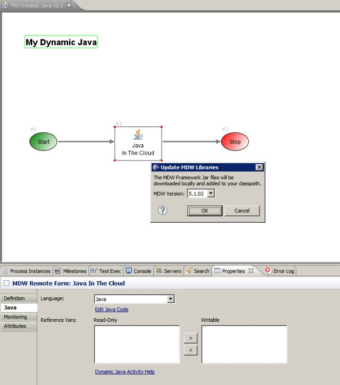

Dynamic Java
A key part of MDW's support for cloud deployments and "Platform as a Service" architecture
is the ability to execute dynamic Java transparently in both local and remote environments. The Dynamic Java
Activity provides this capability.
For a detailed walkthrough of MDW Cloud development, see the MDW CloudFoundry Cookbook.
Background
Dynamic Java takes advantage of the runtime compilation and execution framework built into JDK 1.8.
Compiled class definitions are lazily cached in the CompiledJavaCache as specified in the application cache configuration.
An important aspect of the Dynamic Java activity is that it enables you to transparently edit Java Code in a local
or remote environment without needing to redeploy or restart your server. You can also debug your code without
regard to where the workflow is hosted, setting breakpoints and viewing/changing variable values during process execution.
Usage
When you drag the Dynamic Java activity onto your process design canvas, you'll notice that the primary
attribute to specify is the Java Code itself. This content can be arbitrarily large, and can grow in complexity
along with the business logic you're implementing. Another important configuration aspect is the output (or writable)
documents list. Selecting a document variable as writable enables you to make changes to its value from within
your Java code (similar to the way Script Activities work).
To Edit the Java code, click the Edit link on the Java properties tab, or right-click on the activity and select Edit Java from popup menu.
If your workflow project is remote and it's the first time you've edited Java content in the project, you'll
be prompted to select a version of the MDW Framework Jars to download (see screenshot below). Your workflow project
will be converted to include the Java facet, and the framework libraries will be added to your project classpath.
This gives you access to all the standard Java editing capabilities built into Eclipse, with syntax highlighting
and autocomplete for the JDK classes as well as the classes provided by MDW itself.

When starting with a blank Dynamic Java activity, a skeleton implementation is generated by the plug-in to help get
you going (see screenshot). The classname in the generated code is based on the name you gave to the activity when inserting
it into your process, and its package name is based on the workflow package where the process resides. These conventions
are important because at runtime the class will be instantiated based on these same rules.
Your class must implement the JavaExecutor interface. See the code snippet below for an example of how this is used.
In this example, the process variables completionDate, dispensation, instructions, outcome and userMessage are interrogated and manipulated in various ways.
The return value from the execute() method dictates which outbound transition will be traversed when the activity completes.
Running and Debugging
When you're ready to test your Java executor, there's no need to compile or deploy; simply saving the artifact is sufficient.
As with all types of Workflow Assets, when you save the .java file you're actually saving a local
temporary copy, and this is persisted to the database once you save the process definition itself.
You can execute the process in the usual ways (by right-clicking in the process canvas and selecting Run, for example).
You also have the ability to debug your dynamic Java. To do this, simply set your breakpoint(s) in the usual Eclipse way,
and launch the process in debug mode (again by right-clicking on the canvas and selecting Debug, or by clicking the debug toolbar button).
Once launched, your breakpoint should be hit and you can proceed with stepping through code as you normally would in Eclipse.
Example Code
package DonsTests;
import java.text.SimpleDateFormat;
import java.util.Map;
import javax.xml.parsers.DocumentBuilder;
import javax.xml.parsers.DocumentBuilderFactory;
import org.w3c.dom.Document;
import org.w3c.dom.Element;
import com.centurylink.mdw.java.JavaExecutionException;
import com.centurylink.mdw.java.JavaExecutor;
import com.centurylink.mdw.java.MdwJavaException;
import com.centurylink.mdw.model.value.activity.ActivityRuntimeContext;
import com.centurylink.mdw.service.Action;
import com.centurylink.mdw.service.ActionRequestDocument;
import com.centurylink.mdw.service.Parameter;
/**
* Dynamic Java code for execution in the Cloud.
*/
public class PerformCriticalBusinessFunction_A5 implements JavaExecutor
{
ActivityRuntimeContext context;
private String logicalId;
public void initialize(ActivityRuntimeContext context) throws MdwJavaException
{
this.context = context;
logicalId = context.getAttributes().get("LOGICAL_ID");
}
public Object execute(Map variables) throws JavaExecutionException
{
context.logInfo("logical id: " + logicalId);
ActionRequestDocument actionRequestDoc = (ActionRequestDocument) variables.get("instructions");
Action action = actionRequestDoc.getActionRequest().getAction();
if (action.getName().equals("acknowledge"))
{
// TODO
}
else if (action.getName().equals("escalate"))
{
context.logSevere("ESCALATING... ");
variables.put("outcome", "Escalation");
String message = "Escalatation required.";
for (Parameter parameter : action.getParameterList())
{
if (parameter.getName().equals("orderNumber"))
message += "\nOrder Number: " + parameter.getStringValue();
else if (parameter.getName().equals("customerId"))
message += "\nCustomer ID: " + parameter.getStringValue();
else if (parameter.getName().equals("contactTn"))
message += "\nContact TN: " + parameter.getStringValue();
}
variables.put("userMessage", message);
}
try
{
DocumentBuilder builder = DocumentBuilderFactory.newInstance().newDocumentBuilder();
Document document = builder.newDocument();
Element root = document.createElement("dispensation");
document.appendChild(root);
root.setAttribute("outcome", variables.get("outcome").toString());
variables.put("dispensation", document);
variables.put("completionDate", new SimpleDateFormat("MM/dd/yyyy").parse("12/25/2011"));
}
catch (Exception ex)
{
throw new JavaExecutionException("Bad date format.");
}
return variables.get("outcome");
}
}